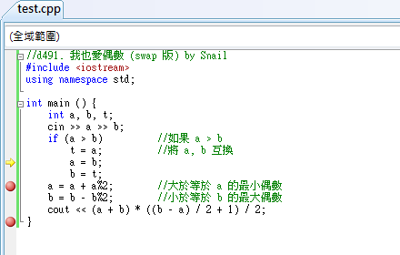
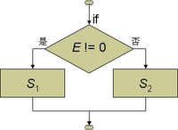
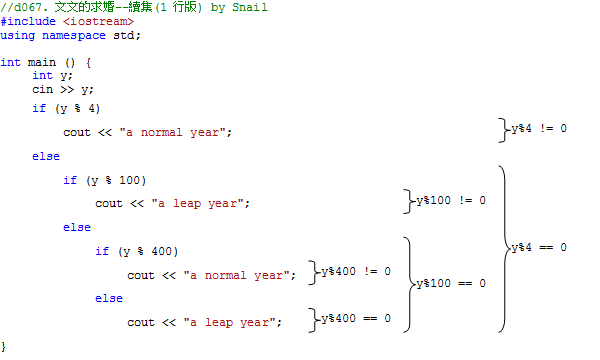

到目前為此，我們學過的「運算子」包括了 2 個「輸出入運算子」 (<< 及 >>)、「指定運算子」 (=)、5 個「算術運算子」(+, -, *, /, %) 等，你也可以用「算術運算子」和「指定運算子」結合成「複合指定運算子」(+=, -=, *=, /=, %=)。
在這些運算子當中，除了回傳值以外，沒有任何「副作用」的就只有這 5 個算術運算子了，它們單純地將前後的兩個「運算元」拿來運算，並回傳運算的結果。
除了這些算術運算子以外，C++ 也定義了 6 個沒有任何「副作用」的「比較運算子」：
| > | 大於 |
|---|---|
| >= | 大於等於 |
| < | 小於 |
| <= | 小於等於 |
| == | 等於 |
| != | 不等於 |
這些比較運算子則可以用來比較兩個值，然後告訴你這樣的關係是否真的存在。以下面的運算式為例：
它就是要判斷 123 是不是「真的」小於 456。因此，它的回傳值應該是「真、假」，「成立、不成立」，「True、False」，「T、F」之類的結果。倒底 C++ 是如何回傳它判斷回傳的結果呢？我們可以執行以下的陳述式來看看它的回傳值。
這個程式在螢幕上輸出了一個 1。也就是說，C++ 是以 1 來代表「真、成立、True」等意義，相對的，它以 0 來代表「假、不成立、False」等意義。
注意，上面這個陳述式一定要加上小括號才能正確地執行。查一下附錄的運算子優先順序，我們發現 << 的優先順序為 6、< 的優先順序為 7，也就是說，在沒有括號的情況下，<< 會比 < 先執行，結果上面的運算式就成了：
而 cout << 123 的回傳值為 cout，於是在輸出了 123 之後，這個陳述式就變成了：
而 cout 是沒有辦法和 456 比大小的。
利用比較運算子會回傳 0 或 1 的特性，我們可以試著去解之前做過的一些題目：
之前說過，這題就是要求 n % 3 的商，無條件進位。但是「/」運算子是「小三除法」，所得的商為「無條件捨去」。我們可以用 n / 3 求商，但是結果不能整除時，也就是「餘數不等於 0」時，所得的結果要再加 1。以下的運算式：
當 n 不是 3 的倍數時，由於餘數不等於 0，所以會回傳代表「true」的 1。因此，這一題的答案也可以寫成：
和之前的答案比較起來，這樣的寫法長了一點點，但是不失為比較運算子的一種用法。
這一題也可以很簡單地利用「比較運算子」來解：
看懂了嗎？如果輸入的 x 等於 0，那麼 (x == 0) 就是「真的」，因此會回傳並輸出代表「真」的 1，反之則輸出代表「假」的 0。
題目大意：輸入的 x 大於 0 時輸出 1，小於 0 時輸出 -1，等於 0 時輸出 0。
這題就難一點了，因為它的輸出有三種可能：-1, 0, 和 1。一個比較運算子只有 0 和 1 兩種可能的結果，要求出三種可能的值，至少要有兩個比較運算子。如果你真的想不出怎麼做，請不要灰心。即使是程式的老手，叫他們不准用 if 陳述式 (下一節才教) 而只用算術及比較運算子來解這題，他們也是要傷點腦筋的。以下是筆者提供給你的參考解法：
這題寫不出來沒有關係，但是你至少要看得懂喔！
題目大意：山六九樂園的門票價格：0~5歲免費，6~11 歲 590 元，12~17 歲 790 元，18~59 歲 890 元，60歲以上 399 元。輸入年齡 a，輸出門票價格。
這題的輸出又更複雜了，一共有五種可能的值，而且它們的差不是1。所以這不是把比較運算的結果拿來加加減減就可以算出來的，需要用乘法去把比較運算所得到的結果放大。以下是筆者提供的參考解法：
隨著年齡的增加，加上票價的差額，最後就得到我們要的答案了。
最後留下一題相對簡單的題目給你練習囉！
在上一節談到「比較運算子」時，我們的練習題似乎都好難。其實「比較運算子」的運算結果應該是「true」或「false」，只是在 C++ 中以 1 來代表「true」、0 來代表「false」，而這些「true」或「false」(1 或 0) 原本的設計是要給 if 及 while 陳述式作為條件判斷之用的，而不是直接當作數值來運算。上一節這樣的安排只是為了讓你更清楚比較運算子的運作方式。
以上一節留給你當作業的「d068. 該減肥了！」為例，你的答案很可能會像下面這個程式：
但是這個並不是一般程式師最直覺的反應，因為他們知道有另一個更強大更好用的指令來處理這一類的問題，那就是 if 陳述式。
if 陳述式的語法如下：
if ( E )
if 陳述式的流程圖如下：
當 ( ) 中的運算式 E 的回傳值不為 0 時，程式就會去執行陳述式 S，否則 (E 的回傳值為 0 時) 就跳過陳述式 S。注意，這裡的 ( ) 是 if 陳述式的語法的一部分，在 if 之後一定要有一對 ( )，它不是用來改變優先順序的括號，不可以省略。
還記前面提過，空白和換行都是「白空白」，對 C++ 程式來說意義是一樣的。因此上面這個程式中的 if 陳述式寫成和寫成
意義是完全相同的。但是我們會讓 w -= 1; 這一行比 if (w > 50) 縮進去 4 格，這樣我們可以很容易看得出來 w -= 1; 是屬於 if (w > 50) 的一部份，而不是獨立於 if 之外的陳述式。
如果所輸入的體重大於 50 時，w > 50 就會回傳 1。而根據 if 陳述式的定義，如果 ( ) 中的回傳值不為 0，程式就會去執行其後的陳述式 w -= 1;，把體重減 1。可是如果輸入的體重小於等於 50 時，w > 50 就會回傳 0，這時候程式就會跳過陳述式 w -= 1;，體重就不會改變。
執行完這個 if 陳述式後，w 裡就會有離開中心時的體重，再用 cout << 把 w 輸出就可以了。
運用 if 陳述式與上面所提的技巧，也可以很容易的解出這題。
這樣寫是否有問題？
在第2的 if 陳述式中，執行到 6 <= a 時不論a為任何數值，運算出來的結果不是 1 (true) 就是 0 (false)，再執行 < 12 時結果恆為 1，一樣會輸出 590。同理，第3及第4的 if 陳述式，一樣會輸出 790 及 890。
那要怎麼寫才正確呢？請先看 3.7 邏輯運算子 內容中的 && 運算子陳述；內容如下：
在討論「d460. 山六九之旅」的問題規則如下：
其實我們也可以直接把上面五條規則直接翻譯成五個獨立的 if 陳述式。第一個規則很簡單，只要寫成這樣就可以了：
第二條規則就比較麻煩一點，6 <= a < 12，在邏輯上沒有問題，但在程式執行上就會遇到困難，因為需同時判斷年齡大於等於6歲(6 <= a )，而且年齡小於12歲 ( a < 12 )，而 if 陳述式的 ()內判斷的值只有一個，這時就需要用一個運算子把這兩個條件的回傳值先「合併」起來。要做這種「合併條件」工作的運算子一共有兩個，它們分別是&& (and) 及|| (or, 在鍵盤上和 \ 同一個鍵，搭配 Shift 使用)，稱為「邏輯運算子」。
&& 是「而且」的意思。參考下表，只有當 E1 及 E2 都不為 0 時，E1 && E2 的回傳值才會是 1；當 E1 及 E2 之中只要有一個為 0 時，E1 && E2 的回傳值就會是 0。
| E1 && E2 | E2 | ||
|---|---|---|---|
| =0 | =1 | ||
| E1 | =0 | 0 | 0 |
| =1 | 0 | 1 | |
| E1 || E2 | E2 | ||
|---|---|---|---|
| =0 | =1 | ||
| E1 | =0 | 0 | 1 |
| =1 | 1 | 1 | |
於是第二條的規則「如果 年齡大於等於6歲，但不滿12歲，付590元」便可以寫成：
如果 a 等於 7，那麼 a<=6 && a<12 的求值過程如下：
| 6<=a && a<12 | 先算 <= < |
| → 1 && 1<12 | 再算 &&。E1 和 E2 皆不為 0，所以回傳 1先算 <= < |
| → 1 |
因此這一題的正解：
運用 if 陳述式與上面所提的技巧，你也可以很容易地就解出這題了。
這樣是否正確？當 a 與 b 題數相等( 其中有兩個或三個題數相等 )時會有什麼結果？發現沒有任何輸出！
那換成這樣寫呢？在 > 的部分都變成 >=
又有什麼問題呢？當 a 與 b 題數相等( 其中有兩個或三個題數相等 )時，結果是？發現至少 2 ~ 3 個輸出！
正確的寫法：
有沒有發現善用 = ，可以解決此題多重判斷的問題！
這題又可以這樣解，這次我們把這題改成填空題好了。
上面的程式少了兩個 if 陳述式，你能正確地填入並 AC 這題嗎？
C++ 提供了一個「樣板函數」max ()，使用時你必須在 () 中放兩個相同型態的值，中間以逗號隔開。它會回傳這兩個值中較大的那一個。以下面這個程式片段為例：
上面的程式片段執行完時，c 的值就會等於 5。思考一下，這個「樣版函數」max () 樣版函數能不能用來取代「d065. 三人行必有我師」的程式碼中的 if 陳述式呢？
你也可以把第 8 行的運算式直接代入第 9 行，程式就變成了：
即然一個式子就可求出來了，那麼 teacher 這個變數也不需要了：
d491. 我也愛偶數 (swap 版)
這個題目和「d490. 我也愛偶數」一模一樣，唯一的差別在它輸入測試資料的時候，並不保證 a ≤ b。可是如果 a > b 時，我們的程式就會出現錯誤。因此我們的程式在開始計算時，需要先去判斷 a 是否大於 b，如果是的話，就需要把 a, b 的值互換。
看也知道上面的陳述式不能執行。將兩個變數的值互換的過程，可以把它想像成將兩杯不同的飲料 (a 杯與 b 杯) 互換，我們需要去找另一個空杯 (t 杯) 作為暫時存放其中一杯飲料的容器，才能順利將 a, b 兩杯飲料的內容互換。其過程如下：
要注意 = 運算子的方向，t = a 是代表將 a 的值指定給變數 t，資料是從 = 的右邊跑到 = 的左邊，初學者可能不太習慣。在上面這三個陳述式執行過後，a 與 b 的內容就互換過來了。將這段程式碼套入之前「d490. 我也愛偶數」的程式中如下：
開始執行這個程式，輸入 5 2，程式輸出 6，完全正確！它的確把 a, b 的內容換過來了！但是當我們輸入 2 5 時，程式竟然輸出 -6！(也有可能不是 -6，而是其他的值)。
倒底是哪裡出問題了？在告訴你答案之前，筆者要先介紹一下如何使用 VC++ 的偵錯功能。
還記得中斷點吧？到目前為止，我們只把中斷點用來讓程式結束離開之前所停下來讓我們看一下程式輸出的結果，其實中斷點真正的用途在於偵錯。請你在程式的第 12 行也加上一個中斷點，然後開始執行程式。第一次我們仍然輸入 5 2，按 Enter 之後程式便會停在那一行。這時候，請你把滑鼠游標移到程式中任何一個變數 a 上，VC++ 就會顯示當時變數 a 的值為 2，再移到變數 b 上，它就會顥示當時變數 b 的值為 5，證明 a, b 的值的確已經正確地互換了，所以執行的結果也會是正確的。
這時候如果你不想繼續執行下去，而希望重頭開始另一次的測試時，可以按工具列上的 (重新啟動) 按鈕，(或是在主選單選「偵錯 / 重新啟動」)，它就會直接從頭開始。 這次我們輸入 2 5，按 Enter 後程式一樣在第 12 行停下來，這時候我們再用滑鼠去檢查 a 與 b 的值，理論上 a 並沒有大於 b，所以它們的值應該維持 2 與 5 不變。可是我們發現 a 被改成 5 也就算了，b 竟然變成了 0 (也有可能不是 0 哦！待會兒會告訴你為什麼。)，這是怎麼一回事？
為了追根究底，我們再來使用另一個偵錯工具--「逐步執行」。要讓程式在某一個地方停下來，除了設中斷點以外，還有另一個辦法--「執行至游標處」。請用 滑鼠在 cin >> a >> b; 那行的任何位置按一下右鍵，然後選「執行至游標處」，程式便會開始執行，然後就會停在這一行。

請你在工具列中找到三個追蹤程式執行用的按鈕如下：
左邊那個就叫作「逐步執行」，但是那不是我們要的，因為 cin >> a >> b; 是系統的輸入動作，如果你按左邊那個「逐步執行」，程式會試圖進入系統的內部函數，可是這些系統的內部函數並沒有提供原始檔來讓你偵錯。而右邊那個叫「跳 離函式」，它會把目前的函式也就是 main () 執行完畢並跳出，這顯然也不是我們要的。中間那個叫作「不進入函式」，意思是要「逐步」執行程式，可是如果遇到呼叫其他函式時，就直接把那個函式執行完 畢，而不是跳進去偵錯。這個才是我們要用的那個按鈕！
這時候請你按一下「不進入函式」，那個黑底的 DOS 畫面又會出理，等你輸入變數 a, b 的值。我們就輸入 2 5 然後按 Enter。程式這時候停在下一行的 if 陳述式。按照我們的想法，因為 a 並沒有大於 b，因此如果我們再按一下「不進入函式」，那麼程式應該會跳過下面 3 行陳述式，而直接跳到 a = a + a%2; 那一行。可是當我們真的按下去時，發現它只跳過一行，而停在 a = b; 那一行！
原來 if 陳述式的 () 中的運算式回傳值為 0 時，它只會跳過緊跟在 () 後面的那個陳述式。
此時你應該可以了解為什麼 a 會變 5 了。至於 b 為什麼會變 0 呢？由於我們的 if 陳述式跳過了 t = a; 這個陳述式，因此 t 的值並未設定，所以當我們執行 b = t; 時，就把這個未設定的 t 值設定給了 b。在 C++ 中，未設定的變數值不一定會是 0 哦，而是原來殘留在記憶體內的值，只是這個值常常會是 0。
可是這樣我們的程式就會有問題啦！當我們要跳過好幾個陳述式時該怎麼辦？這時候我們可以用「複合陳述式」(Compound Statement)。所謂的「複合陳述式」就是把若干個陳述式用大括號包起來，在程式的語法上，它可被視為一個陳述式。以我們的程式為例，我們可以把要 跳過的三個陳述式用大括號包起來，如下：
為了程式更容易閱讀，我們會把它們分行：
有些程式師為了讓程式看起來不會太鬆散，會把 if (a > b) 和左大括號接成一行。但是千萬不要把右大括號也接在前一行的後面，因為我們需要有一個符號來明顯地標示出 if 陳述式的結尾。
完整的程式如下：
這個程式就可以 AC 了，趕快去試一下吧！
在寫程式時，把兩個變數的內容互換是常見的工作，因此 C++ 很貼心地為我們加了 swap () 這個「樣板函數」，使用時只要把要交換內容的兩個變數放在 () 中並用逗號隔開來就可以了。因此上面程式的
可以改寫成
這個題目的輸出不是數值，而是字串，因此沒有辦法只用算術運算子或是關係運算了就算出答案來。既然我們已經學過了 if 陳述式，那麼我們就用它來解這一題。
如果有兩個連續的 if 陳述式，它們的條件完全相反，也就是當其中一個 if 陳述式的條件成立時，另一個 if 陳述式的條件必定不成立，那麼這兩個 if 陳述式就可以利用 else 結合成一個。以上面的程式為例，(i%2 != 0) 和 (i%2 == 0) 就是完全相反的條件，因為一個整數它不是奇數，就是偶數。這時候我們就可以用 else 來把兩個 if 陳述式結合成一個。
加上了 else 子句以後，if 陳述式的語法定義變成了：
它的流程圖如下：
在語法中如果看到有中括號括起來的部份，表示那個部份是「選擇性」的 (Optional)，可以有、也可以沒有，視當時的需要而決定。當運算式 E 所求出的值不為 0 (也就是真) 時，程式會執行 S1；當運算式 E 所求出的值為 0 (也就是假) 時，程式會執行 else 後面的 S2 (如果有的話) 。
你可能會覺得採用 else 以後程式的行數並沒有減少，好像不太有用。但是原先的程式要做兩次的判斷，現在只要做一次就可以了，程式的效率也就提高了。而且在某些情況下，分兩個 if 陳述式來寫反而會出錯。還記得「d063. 0 與 1」這題嗎？在還沒有教 if 陳述式之前，這題我們是用算術運算子或邏輯運算子去求得答案的，現在我們用 if 陳述式來寫寫看：
上面這個程式乍看之下似乎沒有錯，但是執行的結果和我們的預期不一樣，不管我們輸入的是 0 或 1，它輸出的結果都是 1。因為當我們輸入的 x 是 1 時，第一個 if 陳述式會把 x 改成 0，可以緊接著第二個 if 陳述式發現 x 是 0 時，又把它改回 1 了。但是如果我們把這個程式改用 else 來做的話就不會有這個問題了：
其實上面的 if 陳述式的用法還可以再簡短一些。有經驗的 C 或 C++ 程式師都知道，如果 () 中的條件運算式的最後一個運算是 != 0 的話，那麼這個運算就是可以省略的了。因為只要所求出來的值不等於 0，if 陳述式就會去執行 () 後面的陳述式，因此 != 0 的運算是多餘的。由於「d063. 0 與 1」這題的輸入只有 0 或 1，所以 if (x == 1) 也可以寫成 if (x != 0)，而 != 0 可以省略，所以 if (x != 0) 可以寫成 if (x)。
這對初學者及其他程式語言的程式師而言，是有點不太習慣，因為我們人類的語言中，「如果」後面一定會加上一個條件判斷。假設 x 代表你身上的錢，而你是一個留不住錢的人，因此你會執行下面的「虛擬碼」：
if (x != 0)
spend (x);
意思是「如果身上的錢不等於 0，就把它花掉！」但是如果你寫成：
if (x)
spend (x);
翻譯成人類的語言就變成了「如果身上的錢，就把它花掉！」感覺上並不太通順。所以筆者基本上不太贊成這樣的寫法，因為會影響程式的可讀性。可是因為這已經 成為一個 C 及 C++ 程式師的普遍習慣，而且真的可以省去一個運算而增加效率，所以我們也只好入境隨俗。下次如果看到 if 陳述式的 () 中好像沒有判斷，感覺怪怪的，就把它加上 != 0 再讀讀看，應該就會通順了。
在 C++ 所定義的運算子中，大部份是二元運算子，也就是需要兩個運算子才能運算，比如說 +, -, *, /, % 等算術運算子，都需要給它兩個數值它才能為你做運算，然後回傳一個數值給你。但是在附錄 B 所列出的運算子中，優先順序 1 和 2 的那些運算子都是一元運算子，像正負號就是一元運算子。而優先順序 14 的 ? : 條件運算子是 C++ 中唯一的三元運算子。它的語法如下：
? : 運算式 → E1 ? E2 : E3
E1, E2, E3: 運算式
當運算式 E1 所求出的值不為 0 (也就是真) 時，程式會回傳 E2 的值；當運算式 E1 所求出的值為 0 (也就是假) 時，程式會回傳 E3 的值 。
運用 ? : 運算子，你可以把「d063. 0 與 1」的程式寫成這樣：
只是這個程式還真的滿難懂的。所以儘管筆者自己也覺得 ? : 運算子還滿好用的，但是還是要提醒您不要「濫用」，否則到時候連你自己都看不懂自己寫的程式了。
? : 運算子也可以直接與輸出運算子 << 併用，但是要注意的是，<< 運算子的優先順序要比 ? : 來得高，需要使用括號來解決這個問題。「d064. ㄑㄧˊ 數？」的程式可以改成這樣：
我們再複習一下 if 陳述式的語法：
仔細看一下這個語法定義。if 陳述式本身就是一個陳述式，而 if 陳述式的定義又包含了 S1 及 S2 兩個陳述式。這就是 if 陳述式的語法定義中的遞迴特性。
所謂「遞迴」(Recursion) 的意思是在定義一個事物時，又用到了這個事物本身。筆者最常引用的例子就是蔣介石先生的名言：「生活的目的在增進人類全體之生活；生命的意義在創造宇宙繼 起之生命。」當他在定義生活的目的時，他又用到了「生活」這個字眼，當他在定義生命的意義時，也用到了「生命」這個字眼。從程式設計的角度來看，蔣先生的 這些定義並不夠完整，至於為什麼，留待後面的章節來討論。
基於 if 陳述式的語法中的遞迴特性，一個 if 陳述式中可以包含一個或兩個其他的陳述式 S1 及 S2，而這 S1 及 S2 可不可以也是 if 陳述式呢？答案是肯定的。如果一個 if 陳述式中包含了另一個 if 陳述式，我們就稱這樣的 if 陳述式為「巢狀」(Nested) if 陳述式。
還記得上面的解題是用5個 if 陳述式，且第2~5個 if 的比較運算中的第一個都與上一個比較運算相反。
我們也可以寫成
同理，改寫第3~5的 if 陳述式，結果如下：
這題就是要我們去判斷某個西元年份是閏年還是平年。只是你確定你知道判斷閏平年的規則嗎？事實上閏平年是依據下面四個規則來判斷的：
我們可以利用巢狀 if 述式來完成這個題目如下：
程式中所執行的第一個 if 判斷為 if (y % 4) ...，之前我們已經談過，如果一個 if 陳述式的 () 中你找不到關係運算子的判斷，以致於程式讀起來怪怪的，是因為 != 0 被省略了的關係。因此 if (y%4) ... 其實就是 if (y%4 != 0) ...，也就是當 y 除以 4 的餘數不為 0，也就是當 y 不是 4 的倍數的時候。
程式一開始我們先判斷 y 是不是 4 的倍數，如果 y 不是 4 的倍數，根據規則第 1 條，它就是平年。
如果 y 是 4 的倍數，那麼就會執行 else 之後的陳述式，這時候我們再判斷 y 是不是 100 的倍數，如果它不是 100 的倍數，那麼根據規則第 2 條，它就是閏年。
如果 y 是 100 的倍數時，程式會再繼續判斷 y 是不是 400 的倍數，如果不是 400 的倍數，根據規則第 3 條，它是平年。如果是 400 的倍數時，根據規則第 4 條，它就是閏年。
在程式的右邊，我們用大括號標出在各種條件下所執行的範圍。
這個程式中包含了三個 if 陳述式，層層互相套疊，就像是俄羅斯套娃一樣：
不是只有在 else 之後可以包含另一個 if 陳述式，在 () 與 else 之間也可以。上面的程式也可以改寫如下：
在這個版本中，我們先區分 100 的倍數和不是 100 的倍數。如果不是 100 的倍數，再區分是不是 4 的倍數；如果是 100 的倍數，再區分是不是 400 的倍數。一樣可以達到判斷閏平年的效果。
在討論「d067. 文文的求婚--續集 (1 行版)」的問題時我們知道閏平年的判斷規則如下：
其實我們也可以直接把上面四條規則直接翻譯成四個獨立的 if 陳述式，而不需要用到巢狀的結構。第一個規則很簡單，只要寫成這樣就可以了：
第二條規則就比較麻煩了。「y 是 4 的倍數」可以寫成 y % 4 == 0，「不是 100 的倍數」可以寫成 y % 100 != 0，但是這兩個條件不能直接把它們塞進 if 陳述式的 ( ) 裡，需要用一個運算子把這兩個條件的回傳值先「合併」起來。要做這種「合併條件」工作的運算子一共有兩個，它們分別是 && (and) 及|| (or, 在鍵盤上和 \ 同一個鍵，搭配 Shift 使用)，稱為「邏輯運算子」。
&& 是「而且」的意思。參考下表，只有當 E1 及 E2 都不為 0 時，E1 && E2 的回傳值才會是 1；當 E1 及 E2 之中只要有一個為 0 時，E1 && E2 的回傳值就會是 0。
| E1 && E2 | E2 | ||
|---|---|---|---|
| =0 | =1 | ||
| E1 | =0 | 0 | 0 |
| =1 | 0 | 1 | |
|| 是「或者」的意思。參考下表，當 E1 及 E2 之中只要有一個不為 0 時，E1 || E2 的回傳值就會是 1；只有當 E1 及 E2 都為 0 時，E1 || E2 的回傳值才會是 0。
| E1 || E2 | E2 | ||
|---|---|---|---|
| =0 | =1 | ||
| E1 | =0 | 0 | 1 |
| =1 | 1 | 1 | |
於是第二條的規則「如果 y 是 4 的倍數，但不是 100 的倍數，是閏年」便可以寫成：
如果 y 等於 2012，那麼 y%4==0 && y%100 的求值過程如下：
| y%4==0 && y%100 | 先算 % |
| → 0==0 && 12 | 再算 == |
| → 1 && 12 | 再算 &&。E1 和 E2 皆不為 0，所以回傳 1 |
| → 1 |
所以 2012 年是閏年。
以此類推，把四個規則都寫完後程式如下：
如下，如果在程式中有兩個 if 陳述式在 ( ) 中的判斷式成立時所做的工作一樣時 (都是 )，也就是說不管是 E1 或 E2 成立時所做的動作都是 S，
if (E1) S
if (E2) S
那麼這兩個 if 陳述式就可以用 || 運算子結合成一個：
if (E1 || E2) S
以下的兩個 if 陳述式便符合上面的條件：
因此可以把它們簡化成一個 if 陳述式：
而其他兩個 if 陳述式
也可以簡化成：
注意一下 && 和 || 的優先順序，我們發現 && 的優先順序比 || 要來得高一層，所以即使不加括號，它還是會先算 && 再算 ||，上面的運算結果仍然會是我們所預期的！
然後整個程式就變成了：
可是一個西元年份 y 如果它不是閏年，就一定是平年，如果不是平年就一定是閏年。因此第二個 if 陳述式也可以直接改成第一個 if 陳述式的 else 子句就行了。
其實閏年的條件就是 (y%4 == 0 && y%100 || y%400 == 0)，翻譯成中文就是「不是 100 的倍數的 4 的倍數或是 400 的倍數」為閏年。
這題有兩個變數要判斷，顯然要比閏平年的一個變數要難一點。別擔心，筆者給你一點提示。
建議你再設一個變數 t，讓它等於 hh * 60 + mm，代表當時的時間距離當天凌晨 0:00 幾分鐘，然後再用 t 來判斷是不是上學時間，這樣問題會變得簡單很多哦！
要判斷一個變數 (x) 是否在一個區間 (a, b) 內時，數學上寫成 a < x < b，但寫程式時不可以直接照抄。比如說，不管 x 等於多少，10 < x < 100 所求出來的結果會永遠為 1 (真)，如下：
| 10 < x < 100 | 左邊的 < 先算 |
| (10 < x) < 100 | 10 < x 回傳值為 0 或 1 |
| (0 或 1) < 100 | 不管 0 或 1 皆小於 100 |
| 1 | 回傳 1 |
要判斷一個變數 (x) 是否在一個區間 (a, b) 內時，正確的寫法應該是 (x > a && x < b)。
C++ 的邏輯運算子除了 && 及 || 兩個「二元運算子」以外，另外還有一個「一元運算子」。在一個數值前面加上 !，可以把非 0 的值變成 0，把 0 變成 1。這個運算子中文翻譯為「非」。
還記得「d063. 0 與 1」這一題嗎？其實這題就是很典型的 ! 運算子的應用。如果輸入的變數為 x，那麼這題的答案直接寫成
就可以了！
為了節省 CPU 的時間，C++ 語言在作邏輯運算子的運算時，會採用所謂的「短路」(Short Circuit) 運算。
短路運算有時也能防止程式出錯